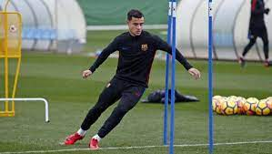
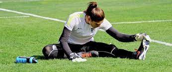

Fases de una sesion de entrenamiento:¿cuántas son y cuál es su orden?
Calentamiento
El calentamiento ha de ser siempre la primera de las tres fases de un entrenamiento.Con una duración de entre 10 y 15 minutos, su objetivo ha de ser activar tanto tus músculos como tu ritmo cardíaco y respiratorio. Para ello es importante que lleves a cabo movimientos circulares, suaves y progresivos con todas tus articulaciones asegurándote de ‘calentar’ tobillos, rodillas, caderas, cintura, hombros, muñecas y cuello.
En esta primera fase también has de hacer desplazamientos suaves de todo tu cuerpo para incrementar tu frecuencia cardíaca y respiratoria, y por supuesto hacer estiramientos, si es posible estáticos de tus grandes grupos musculares manteniendo la posición de 15 a 30 segundos. A diferencia de las otras fases de una sesión de entrenamiento, en ésta bastará con realizar una o dos repeticiones por grupo muscular.
Ejercicio
Esta parte del ejercicio dependerá de cuál haya sido el entrenamiento que te hayas programado ejecutar.Lo habitual es que cada sesión de fitness tenga una parte aeróbica, otra de fuerza y una tercera de habilidades motrices, aunque esto varía en función de los gustos, necesidades o posibilidades de cada persona. Llegados a este punto, permítenos que te demos un consejo.
Todos nuestros entrenadores están encantados de ayudarte y asesorarte, así que no dudes en preguntarles qué tipo de ejercicios puedes hacer y cuántas repeticiones deberías hacer de cada uno para cumplir con tu objetivo fitness, sea el que sea. Nuestros coaches conocen perfectamente cuáles y cuántas son las fases de una sesión de entrenamiento y están a tu disposición para ayudarte a recorrer ese camino que te conducirá hasta #TuMejorTú.
Otra cosa importante que debes saber es que para esta parte del entrenamiento no hay reglas matemáticas que indiquen cuál debería ser la duración del mismo. Se aconseja que se prolongue hasta los 45 minutos o una hora, dependiendo de la resistencia de cada uno y de lo habituado que se esté a entrenar. Y por supuesto de lo que el cuerpo permita en caso de que haya algún problema de salud, ya sea muscular o articular como cardíaco o respiratorio.

Recuperación y estiramiento
Como ya te contamos en otro post de hace un par de semanas, de las tres fases de una sesión de entrenamiento ésta es sin lugar a dudas una fundamental para devolver a tu cuerpo a los niveles respiratorios y cardíacos que tenía antes de empezar tu sesión de fitness.¿Cuánto tiempo? Un mínimo de cinco minutos y si es posible mejor de diez, sobre todo si tienes alguna patología cardíaca. Cuida muy mucho de volver poco a poco a un estado de reposo. Esta disminución paulatina evitará la aparición de arritmias que pueden aparecer por la detención brusca del ejercicio físico y de otros efectos adversos como el mareo o la hipotensión.
Antes de dar por terminada tu sesión de fitness no olvides hacer unos cuantos estiramientos para recuperar y relajar tu tono muscular, con unas tres repeticiones por grupo muscular y tratando de mantener entre 20 y 30 segundos cada estiramiento. Insistimos, si tienes cualquier duda sobre cómo has de hacer las fases de una sesión de entrenamiento, no te quedes con ella y pregunta a nuestros entrenadores. Sabes que nos hace muy felices verte entrenar y saber que nos eliges para cuidar mejor de ti.
